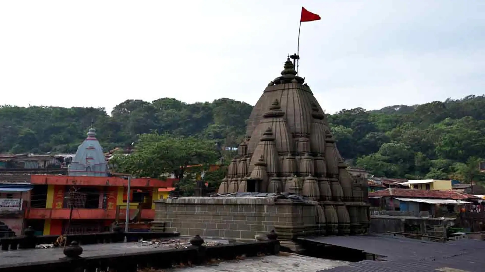
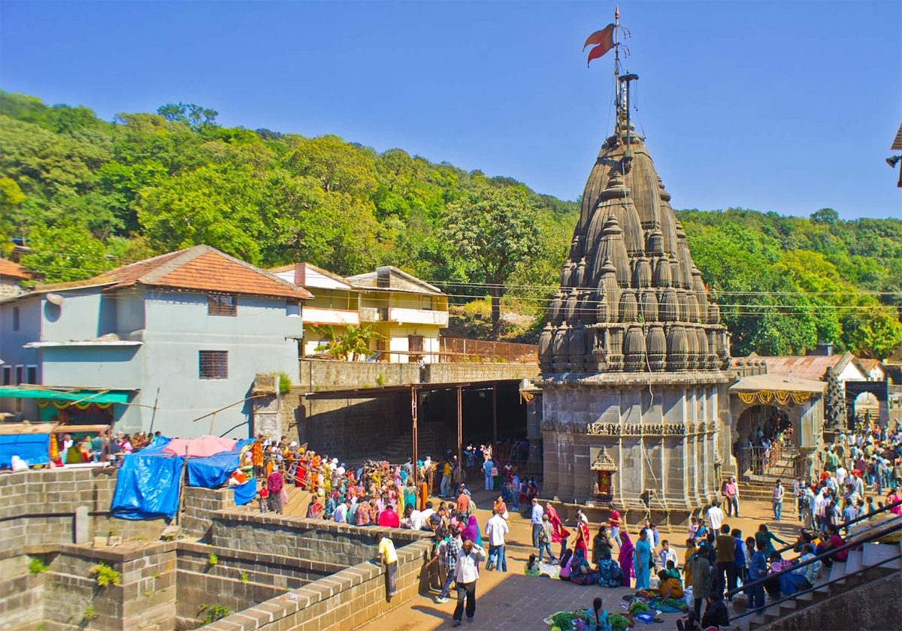

Bhimashankar Temple


Bhimashankar Temple
Bhimashankar Temple is a Hindu temple dedicated to Shiva situated in its eponymous village, Bhimashankar, in Pune district of Maharashtra. It is a key pilgrimage centre and contains one of the 12 Jyotirlingas.[1] The temple's Shiva lingam is one of the five Jyotirlingas of Maharashtra.[2] The mandir is situated on a mountain, 110 kilometers away from Pune. The temple's vicinity has rare plant and animal species.[1] The mandir is located in Khed taluka, in the Bhimashankar forest range.
The Bhima River originates from the Bhimashankar village, and the hills of the Manmad village are present near it, there are old rock carvings of the God Bhimashankar, Bhootings and Amba-Ambika on these hills.
History
According to Namdev, a saint in the medieval era, Saint Jnaneshwar went to Tryambakeshwar and then Bhimashankar. Namdev himself has also visited this place.
Bhimashankaram shrine and the Bhimarathi river have been talked about in writings as far back as the 13th century;[4] however, the current construction of the temple seems to be fairly new.
The temple is built in the Nagara style, which combines traditional and modern designs. The temple hall was constructed during the 18th century by Nāna Phadnavis of Peshwa.[6] The village of Kharosi was granted to the temple by King Shivaji. The daily religious observance was funded through the financial resources derived from the people of the area
He offered one here at Bhimashankar and the others in Menavali, near Wai, in front of a Shiva temple on the banks of the Krishna River, the Banshanker Temple in Pune, the Omkareshwar Temple in Pune, and the Ramlinga Temple in Pune (Shirur).
Chimaji Appa (brother of Bajirao I) donated a big bell to the temple, which is visible in front of the temple.[8] This is one of the many Portuguese colonists' church's bell, which Chimaji and his army brought from Vasai fort as souvenirs after defeating the Portuguese at the Battle of Baçaim on February 1739. This type of bell is also present at the Khandoba temple and Naro Shankar mandir in Nashik.
Legend
The shrine is linked to the legendary asura known as Tripura. The story goes that Tripura did penance, and Brahma, delighted with Tripura's penance, manifests and grants him three wishes. Tripura demanded that he be invulnerable to the gods, devils, yakshas, and gandharvas.
His three "puras" should be unbreakable, and he should be able to travel anywhere in the universe. All his desires were fulfilled. Tripura embarked on a conquest to subjugate three Loka. Indra, the deity associated with the heavens, was also vanquished. Indra made the decision to seek blessings from the deity Shiva and performed penance. Shiva made a vow to annihilate Tripura.
On the peak of the Sahyadri hills, it is said that Shiva assumed the form of "Bhīmā Shankara" at the behest of the gods, and the sweat that spilled from his body after the battle is said to have formed the Bhimarathi river.
Architecture
The architectural style of Bhimashankar is characterised by the use of the Nagara style, which is commonly found in northern India. The building style has some similarities to the Hemadpanthi style, which is common in the Deccan region.[11] It is claimed that the old temple was built on a Swayambhu Shiva Linga.
Furthermore, it can be seen that the Ling is located precisely in the center of the Garbhagriha (Sanctum sanctorum) of the temple. The garbhagriha and antarala are constructed using indigenous stone in the Indo-Aryan architectural style, which is also commonly found in Jain temples. The pillars and door frames of the temple are covered with intricate carvings of deities and human figures.
In the 18th century, Nāna Phadnavis built the Sabhamandap; he also designed and built the shikhara. The Maratha King Chattrapati Shivaji Maharaj endowed this temple to facilitate religious ceremonies.
Vicinity
This section needs additional citations for verification. Please help improve this article by adding citations to reliable sources in this section. Unsourced material may be challenged and removed.
In addition to the Bhimashankar Mandir, devotees also take darshan of the deities of temples present in the vicinity. There is a shrine for Siva Ganams, Shaakini, and Daakini, who assisted Shiva in the battle against the demon Tripurasur.
There are other temples near the main temple, such as Kamalaja mata, who is an incarnation of Goddess Parvathi and who aided Shiva in his battle against Tripurasur.
Behind the Bhimashankar temple is Mokshakund Tirtha. The custom is to take a bath in the kund before proceeding to the temple. The kund is the result of Maha-muni Kaushika's legendary penance here. Additionally, there are the Jnyankund that Dattatreya created and the Sarvatirth connected to the goddess Bhashitadevi. Kusharanya tirth is located to the south of the temple, and it is from here that the Bhima River begins to flow eastward.
A minor shrine dedicated to Lord Shani can be seen within the temple's grounds.[11] There is a statue of Nandi in front of the Bhimashankar Shiva Linga.
The "Shani Temple" is situated within the main complex of the Bhimashankar temple.
Between the two pillars in front of the "Shani" shrine, there is an enormous antique Portugese bell donated by Chimaji Appa in 1739 after his victory against the Portuguese. Behind the temple, there is a narrow walk that goes to the riverbanks. Outside the temple, there is forest area surrounded by mountains and ancient forts on top of them.